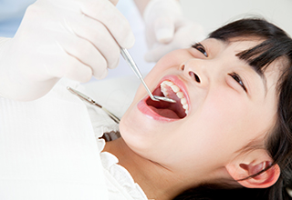

Clinicコンセプト
診療コンセプト
お口は全身の入り口であり、お口の健康状態によっては体の健康まで左右する重要な器官です。千葉県南柏の歯医者「さかいね歯科クリニック」は歯科医療のプロとして、地域に住むみなさんのお口の健康をサポートすることで、全身の健康を手に入れていただきたいと考えています。
こちらでは、当院が掲げる診療コンセプトをご紹介します。お口のお悩みは、お気軽に当院までご相談ください。
常に口腔内をよい状態に
「歯医者に通うのは痛みなどの不具合が出てから」というのが、日本における従来の歯科医療の形でした。これは歯科医療が、「風邪をひいたら内科へ」「ケガをしたら整形外科へ」といった、ほかの診療科のセオリーと同じようにとらえられていたためです。
しかし、実はこれは大きな間違いであると認識しなければいけません。なぜなら、虫歯や歯周病は風邪やケガなどのように、治療を受ければ元通り健康になるものではないからです。お口の病気は体の病気とは「別物」と考えなくてはならず。「なってから治療を受ける」という考えは改めなければいけません。
そこで重要となるのが、「予防」によってお口の中を常によい状態に維持すること。年齢を重ねたときにお口が健康であれば、全身の健康寿命も延びるといわれています。お口の健康は、全身の健康の基盤です。当院ではスタッフ一同、予防に力を入れてみなさんのお口と全身の健康をサポートします。
コンセプトは「予防重視」
虫歯や歯周病は、決して自然に治ることはない病気です。放置すればどんどん悪化し、最終的には歯を失ってしまいます。大切なのは、「治療」より「予防」。虫歯や歯周病は、なる前から予防に取り組む姿勢が重要です。
小さなころから予防意識をしっかり持ち、ご自宅でのケアと歯科医院での専門的なケアを習慣づければ、年齢を重ねても自分の歯を残すことができます。いつまでも自分の歯で食事や会話を楽しめるように――。当院は「予防重視」をコンセプトに、日々安心の診療をご提供します。
子どものころからしっかりと「予防」を

乳歯はいずれ永久歯に生え替わる歯です。しかし、だからといって「少しぐらい虫歯になっても大丈夫」というわけではありません。なぜなら乳歯が虫歯になると、お口の中では虫歯ができやすい環境がつくられ、後で生えてきた永久歯を虫歯にしてしまうケースが高まるためです。
子どもの乳歯は永久歯よりも表面を覆うエナメル質が薄いため、虫歯になりやすいだけでなく、一度虫歯になると進行が早いという特徴があります。とくに奥歯には深く複雑な溝があるため汚れがたまりやすく、虫歯になりがちなため注意が必要です。乳歯の虫歯が悪化して早くに歯を失ってしまうと、永久歯の歯並びが乱れる原因にもつながります。
こういったリスクを排除するには、小さなころから「予防」の意識を持つことが大切です。まだ自分自身でケアが難しいお子さんの歯を守ってあげるのは、ご家族の方の役割となります。当院では、お子さん向けの予防メニューをご用意していますので、ご自宅でのケアと併せて受けさせてあげてください。